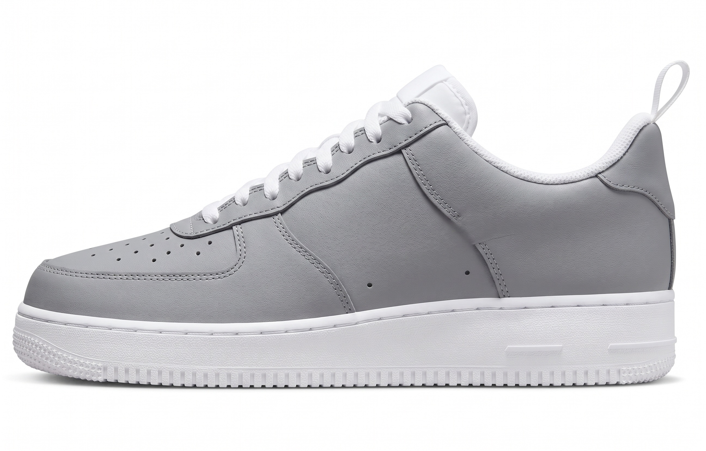

🧵 100% Recycled PET
📋 EFJPT027
載入 3D 模型中...
材質屬性
0.75
0.05
1×
🖱 拖曳旋轉 · 滾輪縮放
規格資訊
可選色系
永續認證
GRSGlobal Recycled Standard
BCIBetter Cotton Initiative
OEKOOEKO-TEX Standard 100
材料組成
數位樣冊功能對比分析
中良現有平台 (v1.0) vs Frontier（競品）vs 中良 2.0 願景規劃
中良數位樣冊
v1.0
Frontier
競品參考
中良 2.0 願景
目標規劃
📂 基礎功能
布料資訊卡（代號／成份／規格）
✓
✓
✓
進階搜尋與篩選
△
✓
✓ AI
永續認證（GRS / OEKO）
✓
✓
✓ +CO₂
價格與交期
✓
✓
✓ 即時
多語言（中／英／日）
△
✓
✓ ×4
🎨 視覺模擬
靜態布料高解析照片
✓
✓
✓
布料貼合真實鞋款模擬
✗
✓
✓ NB574
3D 全視角旋轉預覽
✗
✓ P7
✓
AI 材質柔化生成
✗
✓ P8
✓
材質參數即時調整
✗
△
✓
顏色配色切換
✗
✓
✓ AI
🤖 AI 生成
布料 → 成品一鍵生成
✗
✓
✓
生活情境 Lookbook
✗
△
✓
針織 vs 平織識別模擬
✗
✓ P8
✓
📱 展會客戶體驗
平板展示優化
△
✓
✓
客戶互動選色
✗
△
✓
模擬圖分享／下載
△
✓
✓
🗺️ 中良數位樣冊 2.0 升級路線圖
Phase 1基礎強化（Q3 2026）
- 布料庫 UI/UX 全面優化
- 平板展示專用模式
- 進階搜尋 + 智慧篩選
- 永續認證儀表板
- 多語言（中英日韓）
Phase 2視覺模擬（Q4 2026）
- 布料 → NB574 真實鞋款貼合
- 3D 全視角旋轉預覽
- 顏色配色即時切換
- 材質參數全調整工具
- 客戶互動選色功能
Phase 3AI 生成（Q1–Q2 2027）
- Stable Diffusion 布料貼合
- AI 材質柔化（對標 P8）
- 生活情境 Lookbook 生成
- 多品類延伸（服裝／配件）
- 即時報價系統整合